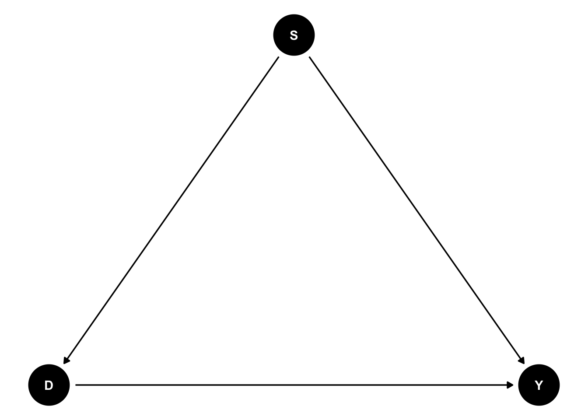

Introduction
Thinking back to my Introduction to Epidemiology class, confounding was one of the topics of central interest. However, it took the remainder of my PhD (and then some) to really get what confounding was. Confounding was introduced as exposure and outcome having common cause. You’ve probably seen the idea motivated with the following DAG:
Here, S is a common cause of \(D\) and \(Y\), and we’re typically interested in estimating the effect of \(D\) on \(Y\). Granted, the effect of \(D\) on \(Y\) is confounded. But like…why? DAG’s aside, what is happening here? That much isn’t answered in introductory classes, and I think it would behoove most people to learn the answer. As a digression, I know the simple difference in means can be decomposed into ATE + Selection Bias + Heterogeneous treatment effect, but I don’t think that really anwers what I want since that decomposition is in terms of potential outcomes and I want an answer which involves the data we have in hand and how we choose to summarize it.
To provide such an answer we need a little but of math, but only a little. In particular, we need the The Law of Total Expectation, which writes an expected value, \(E[X]\), as a weighted average of conditional expectations, namely
\[ E[X] = \sum_a E[X \mid A=a] P(A=a) \>. \] In what follows, I motivate confounding with a fairly typical example involving how a binary exposure affects risk of a binary outcome. We’ll discuss the “Right Way” to estimate the effect of the exposure as well as “The Wrong Way”. We’ll find that the confounding of the relationship between exposure and outcome comes down to a single fact: the wrong weights are applied to the right estimates.
An Example
Suppose a new drug \(D\) is introduced to prevent death. In truth, the drug decreases the risk of death in both men and women by 10 percentage points, but men are more likely to take the drug and men are more likely to die. Hence, the effect of the drug is confounded by sex. Let \(D=1\) be exposure to the drug, \(S=1\) indicate males, and \(Y=1\) indicate death. I’m going to simulate this scenario using the following data generating process
\[ S \sim \operatorname{Bernoulli}(0.5) \>, \] \[ D \mid S \sim \operatorname{Bernoulli}(0.6 + 0.3S) \>,\]
\[ Y \mid D, S \sim \operatorname{Bernoulli}(0.4 - 0.1D + 0.4S) \>.\]
I’ll simulate a million observations so that our precision is big enough to not worry about sampling variability. In R, that can be done with
sim_data <- function(x=0, n=1e6){
withr::with_seed(x, {
s <- rbinom(n, 1, 0.5)
d <- rbinom(n, 1, 0.6 + 0.3*s)
y <- rbinom(n, 1, 0.4 - 0.1*d + 0.4*s)
})
data.frame(s, d, y)
}We’ll use this data to explore the “Right Way” and teh “Wrong Way” of analyzing the causal effect of \(D\) on \(Y\).
The “Right Way”
Open up a book like “What If” and you’ll find that the way to correctly estimate the effect of \(D\) on \(Y\) would be to first estimate the risk of death within strata defined by sex and then weight the stratified estimates by the prevalence of the strata. This can be done in the following way
Code
library(marginaleffects)
model <- glm(y~d*s, data=sim_data(), family = binomial())
crossing(d=0:1, s=0:1) %>%
modelr::add_predictions(model, type='response') %>%
summarise(pred = mean(pred), .by = d) %>%
pull(pred) %>%
diff[1] -0.09910701or, perhaps more elegantly, using {marginaleffects}
Code
library(marginaleffects)
# If I didn't know P(S) maybe I wouldn't use datagrid in this way
nd <- datagrid(model = model, d=0:1, s=0:1)
avg_comparisons(model, variables = 'd', newdata = nd)
Term Contrast Estimate Std. Error z Pr(>|z|) S 2.5 % 97.5 %
d 1 - 0 -0.0991 0.00119 -83.6 <0.001 Inf -0.101 -0.0968
Columns: term, contrast, estimate, std.error, statistic, p.value, s.value, conf.low, conf.high
Type: response Regardless of approach, the estimate is very close to the actual effect of the drug; a reduction in risk of death of 10 percentage points. Why exactly this procedure works relies on the consistency and ignorability assumptions, and the law of total expectation.
Briefly, if we have consistency and ignorability then \(E[Y(d) \mid S=s] = E[Y\mid D=d, S=s]\), and by the law of total expectation
\[ E[Y(d)] = \sum_{s} E[Y(d) \mid S=s] P(S=s) =\sum_{s} E[Y \mid D=d, S=s] P(S=s) \] which is a weighted average of within strata estimates. ’Nuff said, let’s take an extended look at the wrong way of doing things.
The “Wrong Way”
So we know the “Right Way” uses the law of total expectation to get the right weights for the within strata estimates. What does the “Wrong Way” estimate then if not the true causal contrast? Let’s use avg_comparisons to see
Code
model <- glm(y~d, data=sim_data(), family = binomial())
nd <- datagrid(model = model, d=0:1)
avg_comparisons(model, variables = 'd', newdata = nd)
Term Contrast Estimate Std. Error z Pr(>|z|) S 2.5 % 97.5 %
d 1 - 0 0.0599 0.00115 51.8 <0.001 Inf 0.0576 0.0621
Columns: term, contrast, estimate, std.error, statistic, p.value, s.value, conf.low, conf.high
Type: response Interesting, the wrong answer is really wrong. Without adjusting for sex, we would conclude that the drug increases risk of death by 6%. Of course, this is a result of the fact that men are more likely to take the drug and more likely to die.
The “Wrong Way” is a simple difference in means between exposure groups. In doing so, we marginalize over the distribution of \(S\) conditional on \(D\). Since the law of total expectation is used to obtain the right answer, it might be beneficial to use it here as well. In the “Wrong Way” we compute
\[ E[Y \mid D=d] \>. \]
which can be re-written using the law of total expectation as
\[ E[Y \mid D=d] = \sum_{s} E[Y \mid D=d, S=s] P(S=s\mid D=d) \]
Aha! Now we see what confounding really is. Note that \(E[Y \mid D=d, S=s]\) appears in both the “Right Way” and the “Wrong Way”, but in the “Wrong Way” the weights are wrong! They should be \(P(S=s)\) but instead they are \(P(S=s\mid D=d)\)! Confounding is (partially) an improper weighting of the correct estimates!
As an interesting digression, we can actually compute what the wrong approach would produce in the limit of infinite data if we just leverage Bayes rule to rewrite \(P(S=s\mid D=d)\) as
\[P(S=s\mid D=d) = \dfrac{P(D=d \mid S=s) P(S=s)}{P(D=d)} \>. \]
Ey <- function(d, s){
0.4 - 0.1*d + 0.4*s
}
Ed <- function(s){
0.6 + 0.3*s
}
Pd1 <- Ed(1)*0.5 + Ed(0)*0.5
Eyd1 <- Ey(1, 1)*Ed(1)*0.5/Pd1 + Ey(1, 0)*Ed(0)*0.5/Pd1
Eyd0 <- Ey(0, 1)*(1-Ed(1))*0.5/(1-Pd1) + Ey(0, 0)*(1-Ed(0))*0.5/(1-Pd1)
wrong_answer <- Eyd1 - Eyd0
#0.06This really drives the point home that confounding is not a matter of more data, rather its a matter of the right data.
More Wrong
So confounding is partially the wrong weights applied to the right estimates. Earlier, I mentioned that the simple difference in means can be decomposed into selection bias and heterogeneous treatment effects. Now, I’ve designed this example to have a homogeneous treatment effect, so we know that the error comes from selection bias. Let’s determine where exactly selection bias lives in the wrong weights applied to the right estimates, \(P(S=s\mid D=d)\).
According to Causal Inference: The Mixed Tape, the selection bias in the simple difference in means is
\[ E[Y(0) \mid D=1] - E[Y(0) \mid D=0] \>. \]
Again, let’s use the law of total expectation to re-write \(E[Y(d^\prime) \mid D=d]\) as a marginalization over \(S\).
\[ \begin{align*}E[Y(d^\prime) \mid D=d] &= \sum_{s} E[Y(d^\prime) \mid D=d, S=s]P(S=s\mid D=d) \\ &= \sum_{s}E[Y(d^\prime) \mid D=d, S=s]\frac{P(D=d \mid S=s) P(S=s)}{P(D=d)} \end{align*}\]
Its easier to spot where the bias comes from (mathematically) if you consider what the implication would be were exposure to be independent of sex. If exposure were independent of sex, as would be the case in a randomized experiment, then \(P(D=d \mid S=s) = P(D=d)\). The weight in this sum then collapses to \(P(S=s)\), which is the right weight. However, in this example, \(D\) is not independent of \(S\) and so \(P(D=d \mid S=s) \neq P(D=d)\)! This probability has a name, the propensity score, and that it is not the same between strata defined by sex is the reason that the selection bias is non zero in our example. If the propensity score was the same within strata, then strata defined by \(D\) would be exchangeable and \(E[Y(d^\prime) \mid D=d] = E[Y(d^\prime)]\).
Conclusion
Confounding, at least exemplified by the DAG at the top of this post, can be seen as the improper weighting of the right estimates. When viewed through this lens, approaches like re-weighting (via inverse propensity scores or some other mechanism) make a lot more intuitive sense as possible remidies.